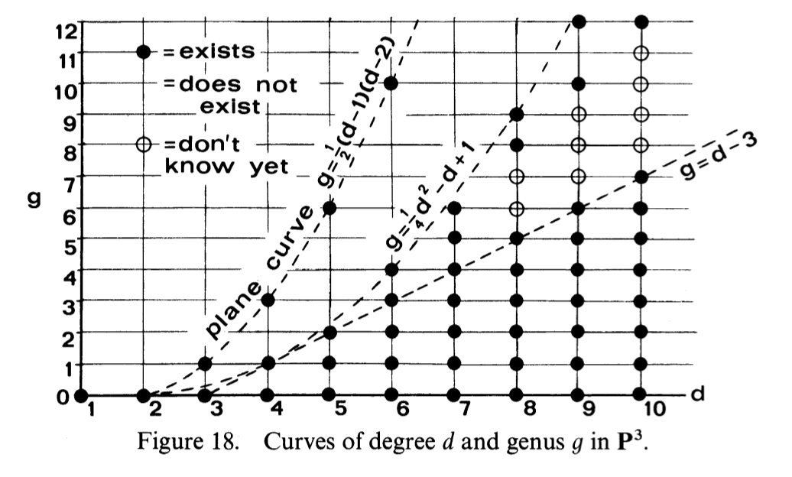

Lecture notes from Karl Christ’s Algebraic Curves course, UT Austin, Spring 2024. Live-TeXed during lecture; any errors are mine.
Last bit about extremal curves
Last time
We saw that \(\varphi_{K_X}(X)\), the image curves, is cut out by quadrics when \(X\) is trigonal or isomorphic to a plane quintic (Enriques-Babbage). Have one more remark about this:
Remark
What the argument showed is that its set theoretically cut out by quadrics. You can actually show that it is scheme-theoretically cut out by quadrics. That is, \(\varphi_{K_X}(X)\) is cut out by quadrics as a scheme; the defining ideal of \(\varphi_{K_X}(X)\) is generated by the intersection of the quadrics.
In general, \(\varphi_{K_X}(X) \subset \mathbb P^r\) is cut out by quadrics and cubics (Petri’s theorem).
Final example of extremal curves
Our final example of extremal curves will be \(g = 5\) curves. In this case, \(C\subseteq \mathbb P^4\) is canonically embedded of degree \(8\) and there are \(3\) linearly independent quadrics vanishing on \(C\). Call them \(Q_1, Q_2, Q_3\).
- If \(Q_1 \cap Q_2\cap Q_3 \neq C\), then \(C\) lies on \(X_{1,2}\) and \(C\) is trigonal with \(g^1_3\) cut out by the ruling on \(X_{1,2}\).
- Otherwise, \(C\) is a complete intersection of the 3 quadrics: \(C = Q_1\cap Q_2 \cap Q_3\).
Curves in \(\mathbb P^3\) and examples
The following image from Hartshorne IV Section 6 summarizes what we know about the existence of curves of degree \(d\) and genus \(g\) in \(\mathbb P^3\):

All possible values of \((d, g)\) below the line \(g = d - 3\) exist, and they will be embedded in \(\mathbb P^3\) by a non-special line bundle. We know everything in degree \(d \leq 6\) using what we’ve discussed thus far in class.
The first case in this image that isn’t covered by the methods thus far discussed in class is the point \((7,5)\).
Example: is there a degree \(7\), genus \(5\) curve?
First try: suppose it lives on a quadric. Then it has bidegree \((d_1,d_2)\) and \(d_1 + d_2 = 7\) and \((d_1 - 1)(d_2 - 1) = 5\). This implies \(d_1 = 2\) and \(d_2 = 6\).
Second try: take \(X\) an abstract curve of genus \(5\). We want \(L\) on \(X\) such that \(\deg(L) = 7\) and \(h^0(X, L)\geq 4\) (we’re forgetting about the geometry of an embedding into \(\mathbb P^3\) for a moment). Then by Riemann-Roch
\begin{align*} 4 = 7 - 5 + 1 + h^0(K_X - L) \implies h^0(K_X - L) = 1, \end{align*}meaning \(L - K_X(-p)\) and \(h^0(X, L) = 4\). We also want this line bundle to be very ample so that it embedds \(X\) as a smooth curve into \(\mathbb P^3\).
If \(L\) is very ample, then \(h^0(K_X(-p-q-r)) = 2\) for all \(q,r\in X\). This comes from our condition of very ampleness; subtracting any two points must lower the dimension of the space of global sections by \(2\). Thus
\begin{align*} 5 - 5 + 1 +h^0(\mathcal O_X(p+q+r)) = 2 \iff h^0(\mathcal O_X(p + q + r)) = 1. \end{align*}This is the case if and only if \(X\) is not trigonal and is not hyperelliptic. (A curve is trigonal if it admits a basepoint free \(g^1_3\).)
Example: is there a \(d = 9\) and \(g = 11\) curve?
Now suppose \(d = 9\) and \(g = 11\). Such a curve would need to lie on a quadric:
\begin{align*} H^0(\mathbb P^3, \mathcal O_{\mathbb P^3}(2)) &\to H^0(C, \mathcal O_C(2)). \end{align*}The domain has dimension \(10\). The dimension of the domain is bounded by \(10\) by Clifford:
\begin{align*} h^0(C, \mathcal O_C(2)) \leq \frac{d}{2} + 1 = 10 \end{align*}and if we have equality then \(\mathcal O_C(2) = 9\cdot g^1_2\), which is not very ample, so \(h^0(C, \mathcal O_C(2)) \leq 9\). We thus have a linear map from something \(10\) dimensional to something \(9\) dimensional, meaning we have nontrivial kernel and hence \(C\) lies on a quadric in \(\mathbb P^3\). This in turn implies that \(C\) has bidegree \((d_1,d_2)\), so
\begin{align*} d_1 + d_2 = 9 \hspace{1em}\text{and}\hspace{1em} (d-1)(d-2) = 11 \end{align*}and since \(11\) is prime, \(d_1 = 2\) and \(d_2 = 12\). These don’t sum to \(9\), however. Thus there exists no curve of degree \(9\) and genus \(11\).
Theorem
Let \(C\subseteq \mathbb P^3\) be a smooth curve of degree \(d\) and genus \(g\).
- If \(C\subseteq \mathbb P^2\) then \(g = \frac{(d-1)(d-2)}{2}\) and for any such values \((d,g)\) there exists a curve
- If \(C\subseteq Q_2\), some quadric in \(\mathbb P^3\), then there exists integers \(d_1,d_2\in \mathbb N\) such that \(d = d_1 + d_2,\) \(g = (d_1 - 1)(d_2 - 1)\).
- If \(C\) is not contained in a quadric, then \(g \leq \frac{1}{6}(d(d-3)) + 1\), and in this case a curve exists.
Example: a \(d = 9\) and \(g = 10\) curve
There are a few ways to construct curves of this type.
- Take a curve of bidegree \((d_1, d_2) = (3, 6)\) on a quadric surface in \(\mathbb P^3\). Then \(d_1 + d_2 = 9\) and \((d_1 - 1)(d_2 - 1) = 10\), as desired.
- \(h^0(I_C(2)) > 0\)
- \(h^0(\mathcal O_C(2))\) can be calculated via the short exact sequence \(0 \to \mathcal O_Q(-3-6) \xrightarrow{\cdot C} \mathcal O_Q \to \mathcal O_C\to 0\) and twisting by \(2\). You’ll get that \(h^0(\mathcal O_C(2)) = 9\).
- Take \(C = Q_1\cap Q_2\) to be a complete intersection of two cubics. Then \(g = \frac{1}{2}(d_1 + d_2 - 4) + 1\), taking \(d_1 = d_2 = 3\) gives \(10\) as needed.